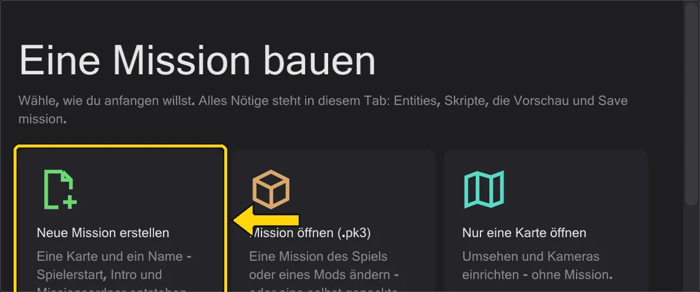

Erste Schritte
Auspacken, dem Programm sagen, wo das Spiel liegt, eine Mission öffnen. Mehr Einrichtung gibt es nicht.
Installieren#
- 1
Lade die neueste
BehavEd-Remake-….zipvon der Release-Seite und pack sie in einen Ordner deiner Wahl aus - etwa neben dein Spiel. In Windows wird nichts installiert. - 2
Starte
behaved.exe. Beim Start sieht das Programm auf GitHub nach einer neueren Fassung und bietet sie an; ohne Nachfrage wird nichts geladen (der Schalter steht unter Hilfe).
Den Spielordner angeben#
Karten, Modelle, Klänge und die Skripte des Spiels liegen in seinen .pk3-Archiven. Öffne Bearbeiten → Spielordner und trage die Spielordner mit Spielordner hinzufügen ein: zuerst base, dann einen Mod wie Movie Duels (MD). Der unterste Ordner gewinnt, genau wie fs_game im Spiel base überschreibt.

Etwas öffnen#
Es gibt mehrere Wege hinein. Die Startfläche im Map-Tab (solange keine Karte offen ist) bietet eine neue Mission, eine Mission aus einem .pk3, nur eine Karte und deine letzten Missionen an. Aus dem Menü:
- Eine Mission - Datei → Mission laden wählt ein
.pk3und öffnet eine Mission mit Karte, Entities und allen Skripten in Reitern. Siehe Missionen. - Ein Skript - Datei → Öffnen öffnet eine
.txtoder eine übersetzte.ibivon der Platte. - Deine letzten Missionen - Datei → Zuletzt geöffnete Missionen öffnet eine ganze Mission mit einem Klick wieder.

Sprache#
Das Programm spricht Englisch, Deutsch, Chinesisch und Japanisch. Es startet in der Sprache von Windows; umstellen lässt es sich unter Ansicht → Sprache. Befehlsnamen und Werte bleiben so, wie das Spiel sie schreibt (affect, SET_NAVGOAL), denn so stehen sie in der Datei.
handbuch neben behaved.exe und braucht kein Internet.